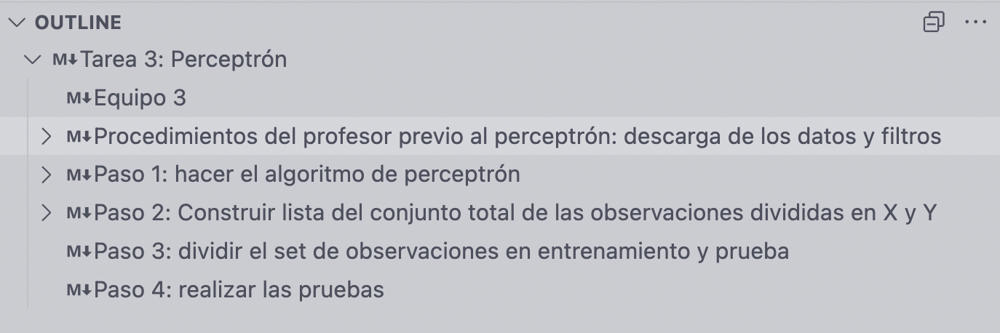

Te ha pasado que...

Quieres aprender más de una nueva forma de programar, o entender un algoritmo de clase, quizás heredar un proyecto de alguien más que ahora tu debes ejecutar. Descargas los scripts y... no entiendes muy bien qué hace el código. Y lo peor: no está comentado.
Muchas veces, adentarse a un nuevo código puede ser una aventura llena de baches. Temas nuevos, funciones nunca antes vistas, nuevas estructuras de datos... Lo bueno: al agregar explicaciones a nuestros algoritmos, podemos ahorrar un gran problema. No solo a otras personas, sino a nosotros mismos cuando volvamos al mismo código.
Echémosle un vistazo a la siguiente celda de código:
Se trata de una función para calcular la probabilidad a posteriori de Bayes Ingenuo. Es un algoritmo para muchos sencillo, para otros complicado. Pero lo cierto es que los comentarios ayudan muchísimo a entender mejor lo que está pasando. Incluso para los propios programadores del algoritmo; es una buena herramienta para recordar qué hacen nuestros propios códigos.
Markdown
Comentar tu código queda claro que es muy importante. Pero creo que hay una costumbre más que deberíamos adoptar los programadores: darle una estructura. En lo personal, cada proyecto, cada código, cada tarea que realizo, la desarrollo en un notebook. Usando títulos, subtítulos, notas y explicaciones.
Creo firmemente que realizar código es como contar una historia. Con una introducción a los personajes y lo que los motiva a actuar, dibujando un camino sin perder el hilo central y llegando al resultado esperado.

Hacer notebooks con celdas de markdown da incluso más realidad al punto anterior. Es conjuntar celdas de código y respaldarlas con una jerarquía. En la siguiente imagen, vemos el outline de un jupyter notebook habiendo usado markdown. Y se puede ver claramente como existe esa estructura, y es muy fácil de revivir cada segmento.
Por último, creo que usar markdown como una "herramienta de comentar código", además de poder entender mejor el código, lo cierto es que da muchísimo estilo. Quiero terminar este post con un ejemplo de un perceptrón que construí en la universidad, donde descubrí lo que markdown podía brindar a mi código. Comentar tu código es: entenderlo, estructurarlo, y saber compartirlo.